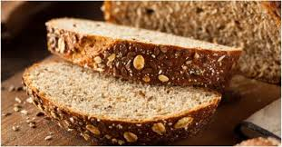

Na tihoj vatri istopiti margarin i čokoladu da se dobije glatka masa. 2. Dok se to topi dobro umutiti 4 jajeta i postepeno dodati šećer. 3. U umućena jaja i šećer dodati rastopljenu masu.. 4.Kada se sve to dobro umuti dodati brašno, još malo mutiti, pa zatim u kalup za projice staviti papirne korpice, prečnika 6-7 cm, i u njih sipati masu do vrha. 5. Peći na temperaturi od 220°C 7 min. dok se ne napravi tanka kora.
oceni
5
4
3
2
1
bez ocene

Integralni hleb
1. Kvasac razmututi sa malo vode.
2. U vanglu za mešenje sipati brašno, dodati so, promešati. Dodati razmućen kvasac i mlaku vodu, pa mesiti varjačom dok se ne dobije glatko testo. Sud pokriti plastičnom folijom i ostaviti oko 1h da testo naraste.
3. Premesiti, oblikovati veknu (možete napraviti tri male vekne od ove količine), poređati u pleh. Veknice ovlaš posuti brašnom, pa zaseći nožem par puta. Ostaviti još 20 minuta.
4. Za to vreme ugrejati rernu, pa ispeći hleb (kod mene se obično peče 10 minuta na maksimumu pa još 20 na 180).
oceni
5
4
3
2
1
bez ocene
Čorba
Luk iseći na sitne kockice i staviti da se dinsta na ulju. Dodati šargarepu takođe iseckanu na kockice i dinstati nekoliko minuta dok ne omekša. Dodati meso, propržiti ga, posuti jednom i po kašikom brašna, izmešati i zatim doliti toplu vodu. Kada prokuva, dodati začine i peršunov list i ostaviti da se kuva na umerenoj temperaturi oko sat vremena. Kada je skuvana skinuti sa vatre i dodati žumance i pavlaku. Umutiti žumance sa pavlakom, sipati malo čorbe, razmutiti i vratiti u čorbu.